fetch-menus：一键备份多环境菜单
tech-poster：一键生成知识分享海报
claude-session-monitor：
Claude Code 会话监控与 Windows 通知
AI自动化测试方案探索：
PageAgent —> AI + Playwright
数据同步时可能覆盖其他系统的新增菜单，导致菜单丢失。之前靠后端提醒、前端手动备份，但一个系统有 6 个环境（dev/test/pngs/ungs/stngs/production），一个人维护多个系统，手动备份非常繁琐。
解决方案：开发 fetch-menus skill，一句话即可单个或批量备份各环境菜单，覆盖 20+ 站点系统。
备份核酸制备系统的dev环境菜单，令牌是 xxxxxxxxxxxxxxxx备份蛋白生产、荧光定量V2、核酸制备系统的所有环境菜单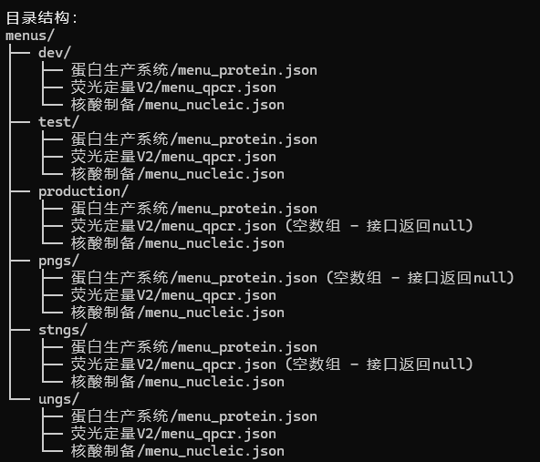
平时会进行知识分享，以前在群里发文字消息邀请大家参加。现在使用 tech-poster skill 一键生成好看的海报图，直接发到群里。
从"文字消息"到"精美海报"，提升分享的专业感和参与度
生成一个知识分享海报
时间：2026.04.21
主题：如何设计并落地一个MCP Server
主要内容大纲：通过 MCP Server+Skill，用 Nodejs+Playwright 抓取页面，简化指令调用
分享人：王会鹏
会议室及时间：东一 （14:00-16:00）Claude Code CLI 没有消息通知功能，任务完成后无法及时得知。需要一个类似 Workbuddy 的消息通知方案。
定位：给 Claude Code 每次会话请求加上"开始埋点 + 结束判断 + 条件通知"的本地监控工具
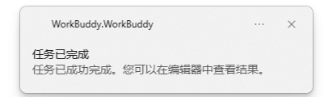
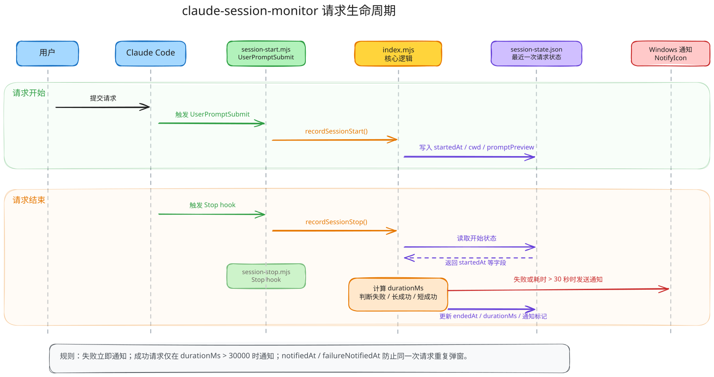
查看最近一次会话的监控状态：开始时间、结束时间、耗时和是否已通知。
发送 Windows 右下角测试通知，用于验证通知链路是否可用。
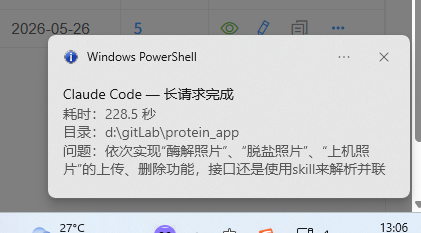
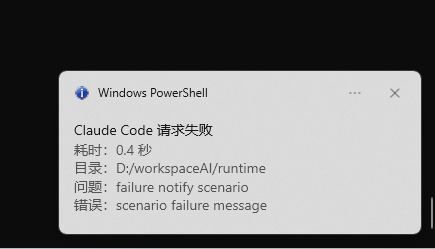
特别适合长编译、批量处理等耗时操作场景
Windows 通知只会显示 5 秒，系统级别的限制。
阿里的 GUI Agent，基于 Chrome 插件和大模型进行自动化操作。但体验下来效果不顺畅，MCP Server 处于 beta 阶段，不稳定。
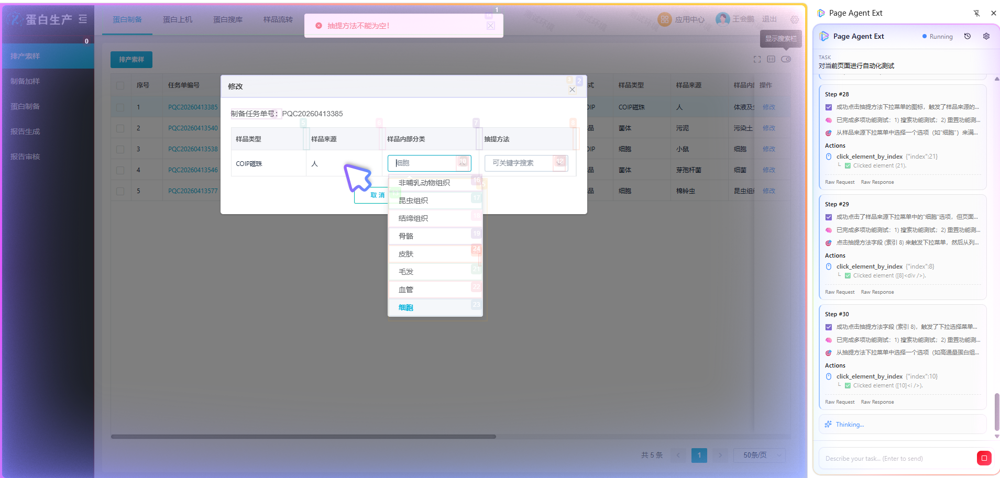
只是闷着头测试，不给出汇总结果
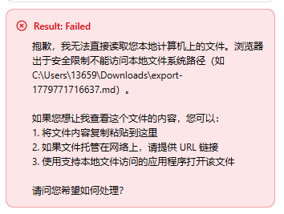
每轮会话都是新的，不记住之前的测试结果
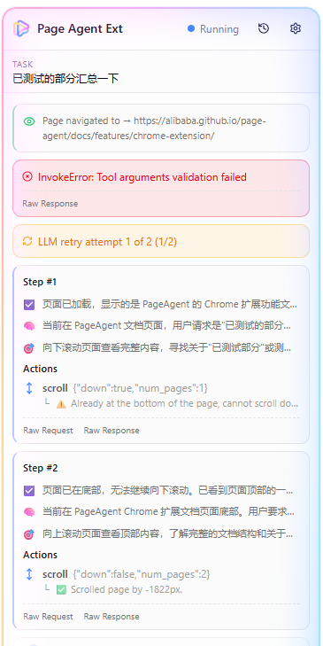
结论：PageAgent 不够成熟，经常莫名报错，无法满足实际需求
蛋白生产系统测试环境（只读模式）
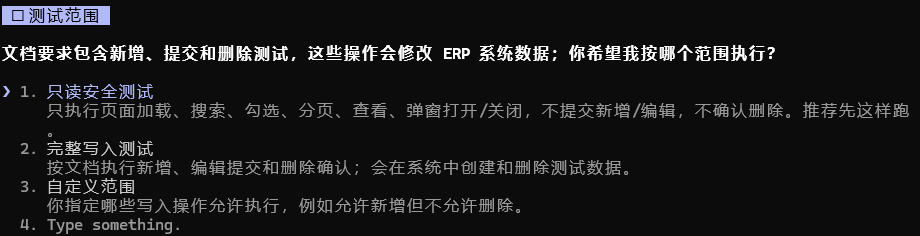
借助第三方 skill、MCP server，最大化提升 Playwright 自动化测试效率。
测试中遇到问题，Superpowers 会自动处理修复，而不是中断任务。修复后继续执行自动化操作，无需人工干预。
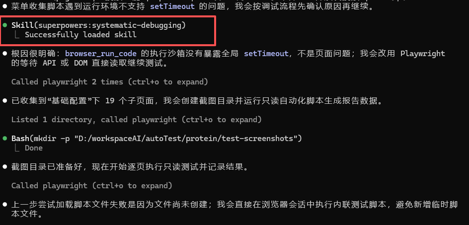
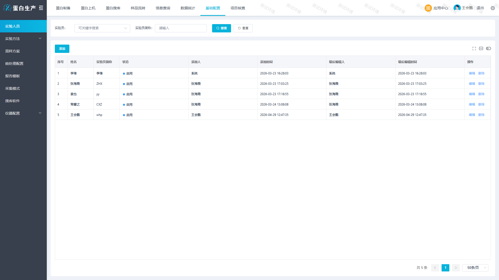
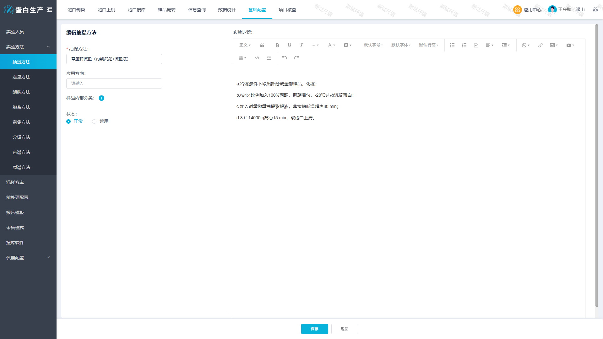
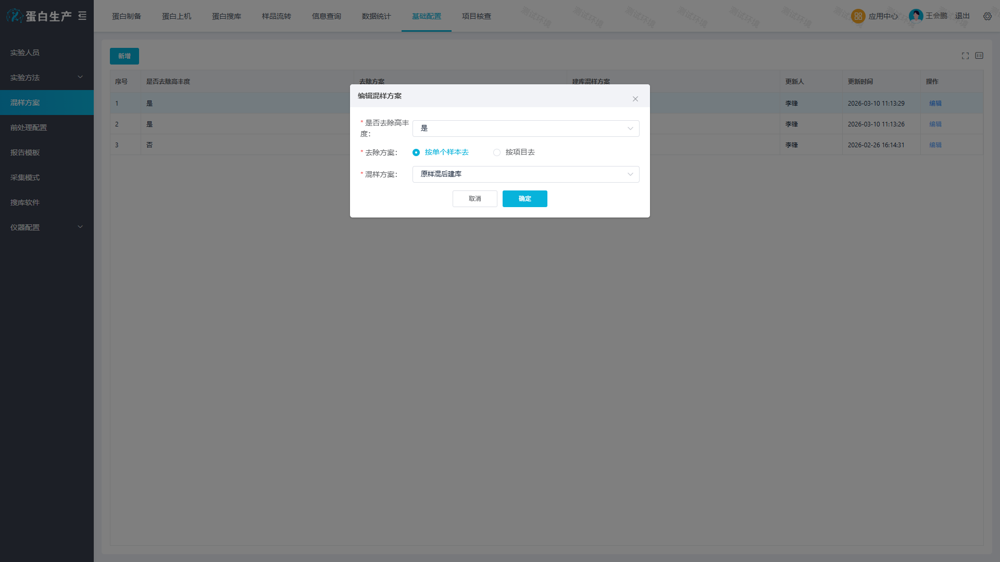
深度测试能力：AI + Playwright 自动化从列表页延伸至二级表单详情页，能模拟"编辑打开"等复杂交互，验证页面渲染与数据回填的正确性，整个测试过程就像真人在通过浏览器访问系统。
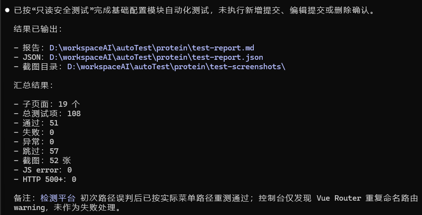
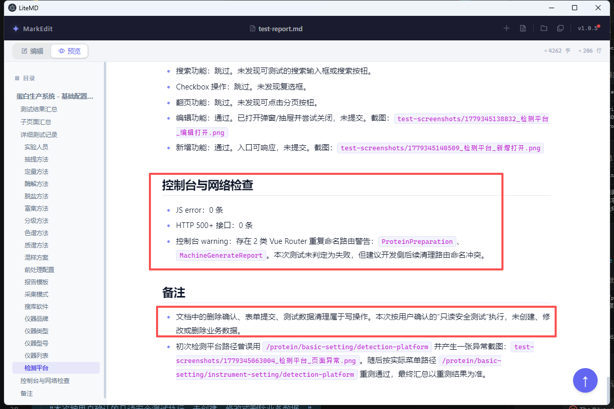
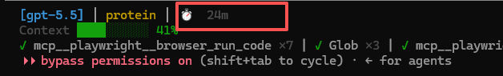
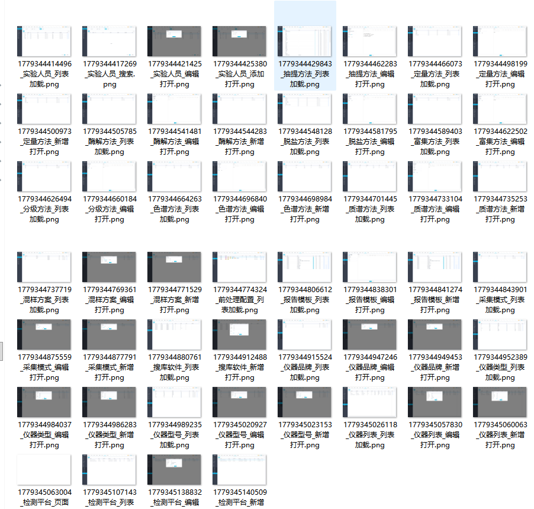
不足：更复杂的业务流转无法覆盖，测试数据较少，无法进行更深入的自动化测试。
1. 自动化系统测试
AI + Playwright + Superpowers 按测试文档驱动执行，覆盖列表页、表单详情页等完整业务流程，自动截图留档
2. 智能分析测试报告
AI 解析测试报告：Minimax MCP 识别控制台/页面截图中的错误，DeepSeek 分析提取的文本信息，精准定位 Bug 根因
3. AI 自动修复代码
AI 根据第 2 步的定位信息自动修复问题模块，修复后触发 Playwright 回归测试
4. 人工审核 + 复测确认
修复完成后 claude-session-monitor MCP 会及时通知提醒开发者，人工 Review 代码变更并执行复测，确保 Bug 真实解决
5. AI 自动提交代码
人工确认后，AI 基于 git-commit-convention Skill 生成 commit message 并推送到远程仓库，闭环交付